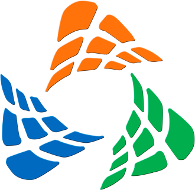

<!-- SIDEBAR -->
<mat-drawer-container class="main-container" autosize>
  <mat-drawer #drawer class="sidenav" mode="side" [opened]="true">
    <div class="row d-flex">
      <div class="col-12 pb-3 mt-3 d-flex justify-content-center">
        
      </div>
    </div>
    <div class="company_identity">
      <div class="tittle d-flex justify-content-center align-items-center mt-3">technology</div>
      <div class="subtittle d-flex justify-content-center align-items-center mt-2">solution center</div>
    </div>
    <div class="row access-link">
      <div class="col-12">
        <hr>
      </div>
      <div (click)="gotoAbout()" class="col-12 mt-3 d-flex justify-content-start align-items-center access-link-item">
        <mat-icon class="me-2 icon">outlined_flag</mat-icon>
        <span style="line-height: 32px;">Acerca de...</span>
      </div>
      <div (click)="gotoCountries()"
        class="col-12 mt-3 d-flex justify-content-start align-items-center access-link-item">
        <mat-icon class="me-2 icon">outlined_flag</mat-icon>
        <span style="line-height: 32px;">Lista de Paises</span>
      </div>
    </div>

  </mat-drawer>

  <!-- CONTENT -->
  <div class="sidenav-content">
    <mat-toolbar class="header">
      <div class="row account w-100">
        <div class="col-6  d-flex justify-content-start align-items-center">
          <span (click)="drawer.toggle()" class="d-flex justify-content-start align-items-center">
            <mat-icon style="color: darkgrey;">menu</mat-icon>
          </span>
        </div>
        <div class="col-6  d-flex justify-content-end align-items-center">
          <span [matMenuTriggerFor]="loginMenu"
            class="badge rounded-pill  bg-secondary d-flex justify-content-center align-items-center">
            <mat-icon style="color: white;">arrow_drop_down</mat-icon>
            <span class="pe-3">{{usuarioCaption}}</span>
          </span>
        </div>
        <mat-menu #loginMenu>
          <menu mat-menu-item (click)="doLogout()">
            <mat-icon>logout</mat-icon>
            <span class="menu">salir</span>
          </menu>
        </mat-menu>
      </div>

    </mat-toolbar>
    <router-outlet></router-outlet>
  </div>

</mat-drawer-container>
